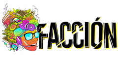

Quiénes hemos juntado Trayectorias hasta hoy en este servidor...
El HackLab Cochabamba es un espacio distribuido, abierto y colaborativo, de experimentación hacker en Cochabamba.
El HackLab no es una institución, es la suma de voluntades. Somos un espacio no físico de co-creación, transferencia de conocimiento, apertura de lógicas, ... todo ello desde la premisa básica del COMPARTIR.
+ www.hacklabcbba.org
+ www.hacklabcbba.org
El Barrio de las Heroínas es un espacio abierto a la discusión, el diálogo, la proposición y la creación desde el barrio de Villa Coronilla de Cochabamba. Una estrategia compartida entre la Plataforma Vecinal, la O.T.B., Kuska, Jóvenes Sie7e, el Colectivo de Comunicaciones de Villa Coronilla y la plataforma de mediactivismo con perspectiva de género. Un uso social y contextual de las nuevas tecnologías por y para el barrio.
+ www.barriodelasheroinas.org

Facción es una plataforma que articula – desde Latinoamérica – redes independientes de mediactivismo a partir de procesos participativos, horizontales y abiertos, con el objetivo de incentivar la comunicación libre, abierta y compartida por una transformación social y cultural. Activistas, artistas, radialistas, bloguerxs, cineastas, comunicadores y comunicadoras en general, gestores culturales, desarrolladores de tecnología libre, sociedad civil articulada y movimientos sociales de más de 15 nacionalidades distintas.
+ www.faccionlatina.org
+ www.faccionlatina.org
El Arte Resiste es una plataforma de protesta, resistencia y acción permanente de los ciudadanos mexicanos que trabajamos en el arte y la cultura. Es una plataforma abierta a la colaboración con todos los colectivos y organizaciones que hoy se manifiestan en México por la justicia y contra la impunidad.
+ www.elarteresiste.net
Guerrilla Translation es una cooperativa y un colectivo de traducción P2P fundado en España. Somos un grupo pequeño pero internacional de lectores ávidos interesados en temas sociales y medioambientales. Vivimos para traducir y compartir el contenido que seleccionamos, pero no somos voluntarios: estamos desarrollando un innovador modelo de negocio cooperativo propio que pone en práctica muchas propuestas contemporáneas en torno a la nueva economía y su potencial de cambio.
+ www.guerrillatranslation.es
ELLA - Encuentro Latinoamericano de Mujeres - tiene como principal objetivo la construcción de experiencias a partir de la diversidad de perfiles femeninos de más de 15 países de Iberoamérica.
+ www.ellas.cc
Con el soporte de

Código Sur
Con el apoyo de

 / Gift by Stefan Parnarov from The Noun Project
/ Gift by Stefan Parnarov from The Noun Project / Share Idea by Kelig Le Luron from The Noun Project
/ Share Idea by Kelig Le Luron from The Noun Project